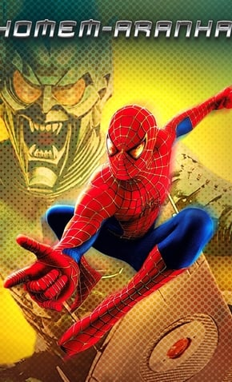
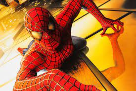
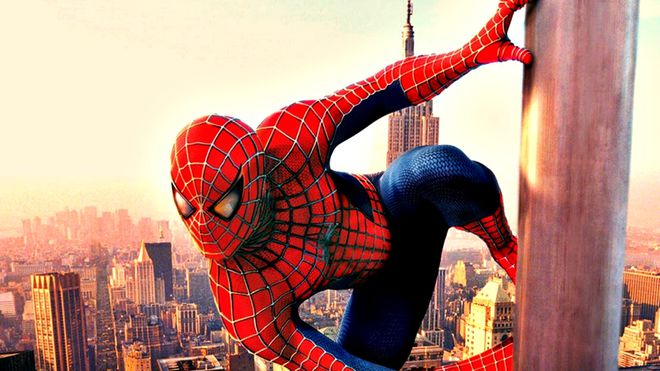

Depois de ser picado por uma aranha geneticamente modificada em uma demonstração científica, o jovem nerd Peter Parker ganha superpoderes. Inicialmente, ele pretende usá-los para para ganhar dinheiro, adotando o nome de Homem-Aranha e se apresentando em lutas de exibição. Porém, ao presenciar o assassinando de seu tio Ben e sentir-se culpado, Peter decide não mais usar seus poderes para proveito próprio e sim para enfrentar o mal, tendo como seu primeiro grande desafio o psicótico Duende Verde.
  